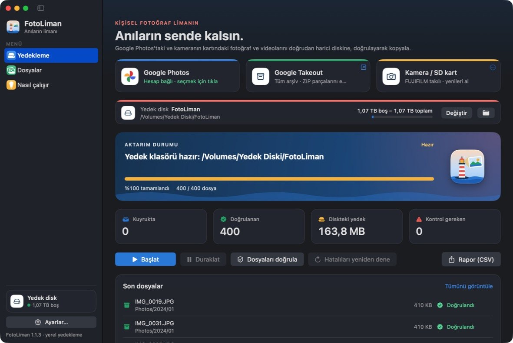
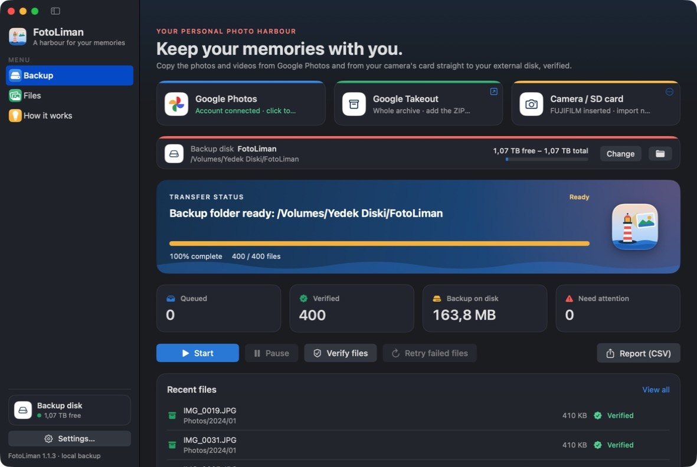

MACOS VE WINDOWS · FOTOĞRAF YEDEKLEME
FotoLiman
Anıların limanı
FotoLiman nedir?
FotoLiman, fotoğraf ve videolarını doğrudan kendi harici diskine yedekleyen, kişisel kullanım için yazılmış bir macOS ve Windows uygulamasıdır. İki sürüm aynı yedek diskiyle çalışır.

- Google Photos: Google'ın kendi seçim ekranında (Google Photos Picker) işaretlediğin fotoğraf ve videoları indirir.
- Google Takeout: tüm arşiv için Takeout ZIP dosyalarını içe aktarır; çekim tarihini ve konumu korur.
- Kamera / SD kart: kameranın kartından yalnızca daha önce alınmamış fotoğraf ve videoları kopyalar. Kart yalnızca okunur; kartta hiçbir şey silinmez.
- Her dosyayı diske yazdıktan sonra yeniden okur ve SHA-256 ile doğrular. Aktarım duraklatılıp kaldığı yerden sürdürülebilir.
- Disk çıkarılınca güvenle durur, aynı disk yeniden takılınca devam eder.
- Türkçe ve İngilizce.
Google verilerini nasıl kullanır?
FotoLiman yalnızca photospicker.mediaitems.readonly iznini ister. Bu izinle sadece senin seçtiğin fotoğraf ve videolara erişir; kütüphanenin geri kalanını, e-postanı veya kişilerini göremez. Seçtiğin dosyalar Google'dan doğrudan senin bilgisayarına ve seçtiğin diske iner. FotoLiman'ın sunucusu yoktur; verilerin geliştiriciye veya başka birine gönderilmez.
Ayrıntılar için gizlilik politikasına ve kullanım şartlarına bak.
Sorular ve talepler için: github.com/umutluprens/fotoliman/issues
What is FotoLiman?
FotoLiman is a macOS and Windows app for personal use that backs up your photos and videos directly to your own external disk. Both versions work with the same backup disk.

- Google Photos: downloads the photos and videos you select in Google's own picker (Google Photos Picker).
- Google Takeout: for a full archive it imports Takeout ZIP files and keeps capture dates and locations.
- Camera / SD card: copies only the photos and videos that were not taken before from your camera's card. The card is only read; nothing on it is deleted.
- Every file is read back from the disk and verified with SHA-256. Transfers can be paused and resumed.
- It stops safely when the disk is ejected and continues when the same disk is connected again.
- Turkish and English.
How does it use Google data?
FotoLiman requests only the photospicker.mediaitems.readonly scope. With it, the app can access only the items you pick; it cannot see the rest of your library, your email or your contacts. The selected files go from Google directly to your computer and the disk you chose. FotoLiman has no servers and does not send your data to the developer or anyone else.
See the privacy policy and the terms of service for details.
Questions and requests: github.com/umutluprens/fotoliman/issues